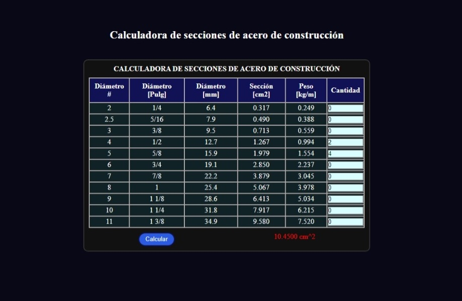
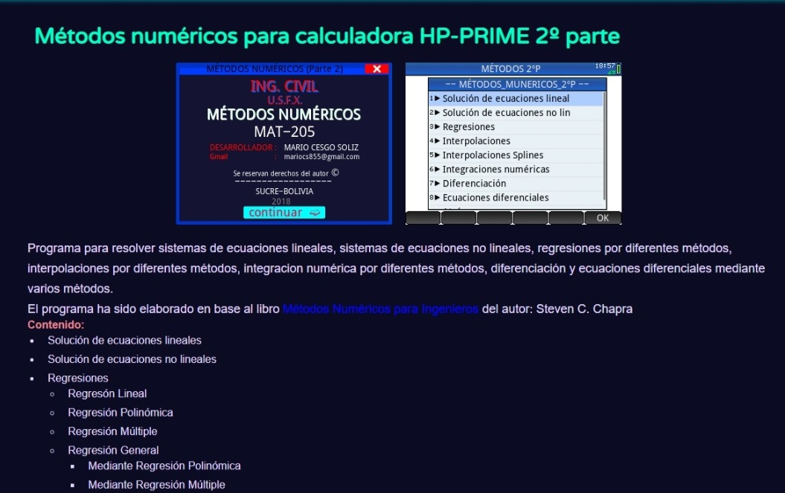
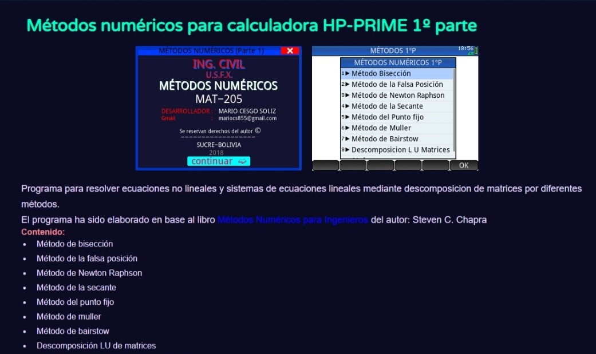

Últimas publicaciones
Modelado de un puente con Autodesk Infraworks y Revit
Se muestra un video de modelado del puente Guozigou Bridge - China, utilizando programas de Autodesk
23 Enero, 2023
Calculadora de
secciones de acero de construcción

Programa para determinar la combinación de aceros necesaria para cubrir la sección de aceros requeridos para el diseño de secciones de hormigón a flexión, corte, compresión, etc.
14 Enero, 2023


Interpolación de curvas
de nivel | Programa HP-PRIME
11 abr, 2022


Cálculo de escalas
| Programa HP-PRIME
28 feb, 2022

Cálculo
de ladrillos |
Programa HP-PRIME
21 feb, 2022